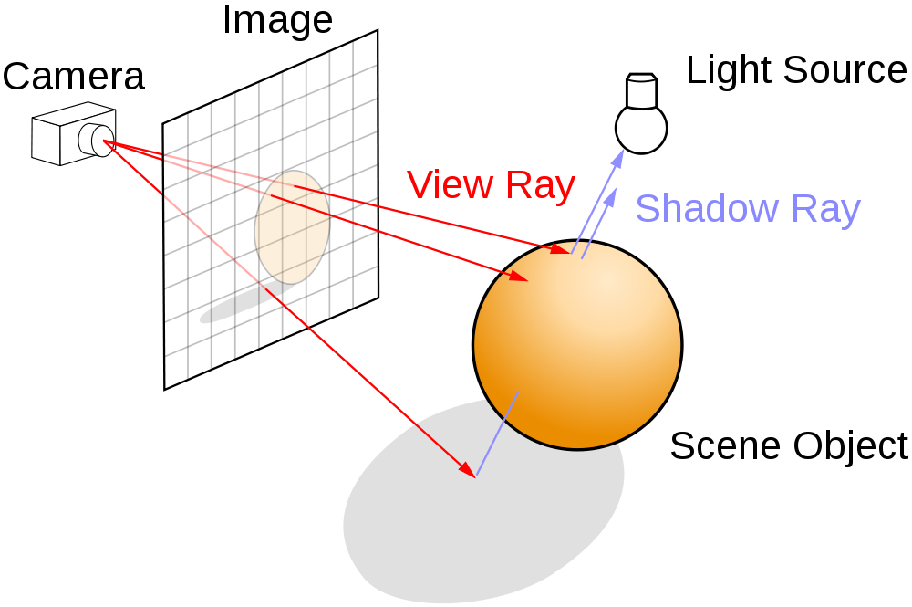
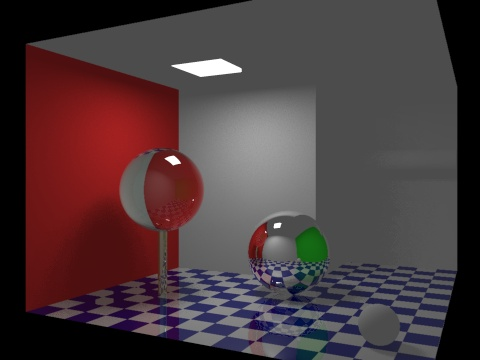
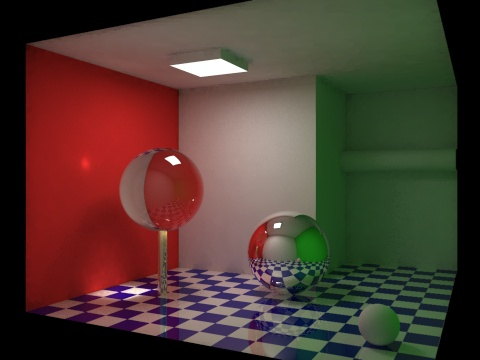
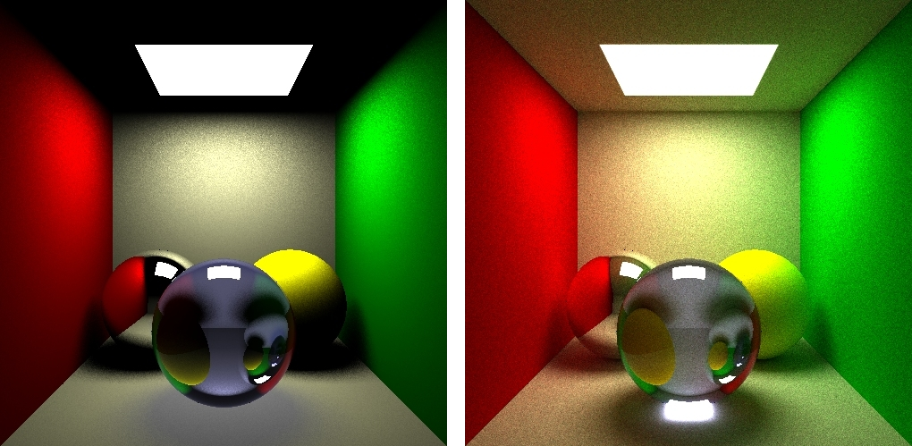
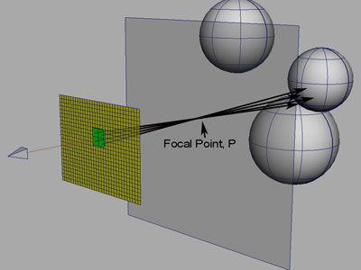

Path tracing
Jozef Mláka
x.jozef.mlaka@gmail.com
Which one is real?
hidden
How light works
hidden
1
2
3
4
5
Ray tracing
hidden

Path tracing vs ray tracing
hidden

Path tracing

Both
hidden

Depth of field
hidden

Depth of field
hidden
Caustics
hidden
Soft shadows
hidden
Takes really long time
hidden
Takes really long time
hidden
Takes really long time
hidden
Thanks!
Sources
Disney's guide to pathtracing
https://www.youtube.com/watch?v=frLwRLS_ZR0
Ray Tracing / Subsurface Scattering @ Function 2015
https://www.youtube.com/watch?v=qyDUvatu5M8
Rendering techniques comparison
http://www.winosi.onlinehome.de/Gallery_t14_11.htm
Cornell box comparison
https://www.graphics.cornell.edu/online/box/compare.html
Depth of field article
http://cg.skeelogy.com/depth-of-field-using-raytracing/
Soft shadows image
http://www.assignmentpoint.com/science/computer/real-time-soft-shadow-rendering.html